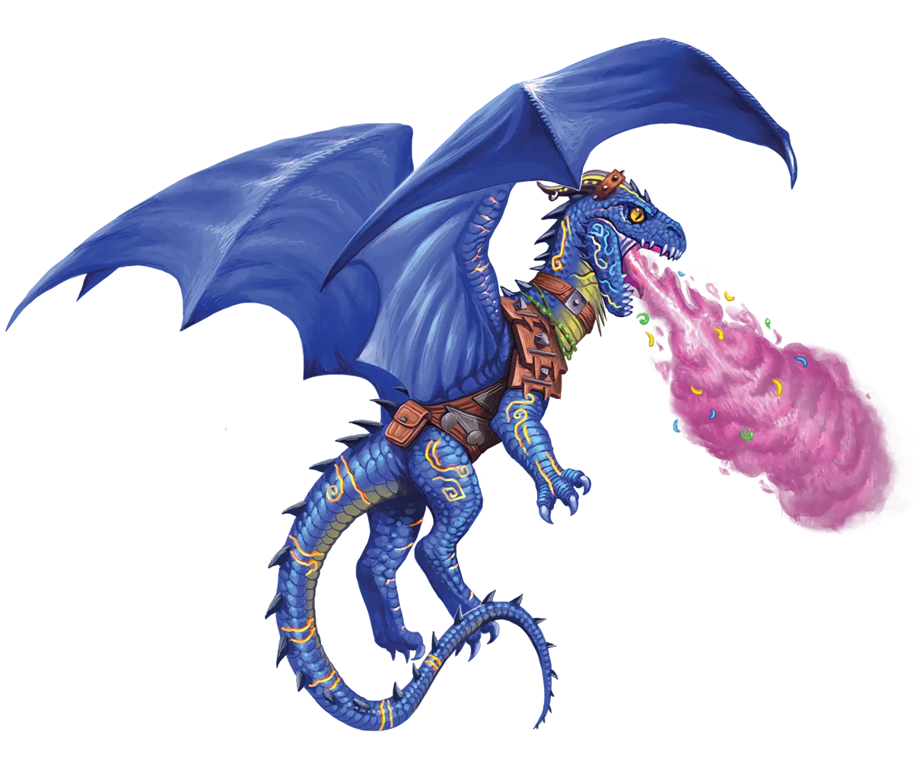

觉醒先祖血脉、以肉身与吐息主宰战场的龙之化身
巨龙核心特质 Core Dragon Traits
| 主要属性 Primary Ability | 体质或魅力，以及力量或敏捷 |
| 生命值骰 Hit Point Die | 每巨龙等级 D8 |
| 豁免熟练 Saving Throw Proficiencies | 体质与魅力 |
| 技能熟练 Skill Proficiencies | 选择2项：体操、驯兽、奥秘、运动、历史、威吓、自然、察觉、求生 |
| 武器熟练 Weapon Proficiencies | 简易武器、天生武器（啃咬与爪击） |
| 护甲受训 Armor Training | 轻甲 |
| 起始装备 Starting Equipment | 选择A或B：（A）一把军用武器（若具熟练）或任意简易武器、一把轻弩和20支弩矢（或任意简易武器）、皮甲或链甲（若具熟练），以及地城套组或学者套组；或者（B）3d4 × 10 GP |
流淌于每条巨龙血脉中的神秘魔法意味着它们无需训练或研习便能实现自身的最大潜力：只需静静等待。然而，选择进行永恒之光仪式的巨龙则绕过了这一要求，作为交换，它们潜伏的能力必须通过艰苦的锻炼和来之不易的经验来主动唤醒。换言之，要发展出传统派巨龙需耗费千年或更久才能获得的力量，永光龙必须踏上冒险之旅！

永光龙在永恒之光仪式完成后，其力量如何显现，很大程度上取决于它们选择如何运用自身的魔法。巨龙法师，顾名思义，将它们的威能集中于施法之上，施展复杂的仪式来守护其宝库，并召唤元素能量的漩涡来毁灭敌人。随着能力的增长，巨龙法师学会将法术的力量导入它们的利爪、獠牙，乃至吐息武器之中。事实上，对于许多巨龙法师而言，成就的巅峰是赋予吐息武器生命，注入魔法使其获得独立的生命。
另一方面，龙族摧残者则选择不将魔法导入法术，而是导入自身肉体。与此同时，它们经历严酷的武艺训练期，在战场上磨练技巧，直至能与最伟大凡人战术家相媲美。虽然一些龙族摧残者拿起剑与其他武器与敌人作战，甚至可能穿戴护甲保护自己，但也有同样多的摧残者依赖它们的利爪、獠牙与鳞片。最强大的龙族摧残者常常生长至骇人的体型，几乎与传统派的巨龙难以区分。
先决条件：巨龙种族 Prerequisite: Dragon Race
你的种族必须是巨龙（Dragon）才能获得巨龙职业等级。
作为1级角色 As a Level 1 Character
作为兼职角色 As a Multiclass Character
依原书兼职规则：你的种族必须是巨龙，且体质值或魅力值至少为 13，才能兼职获得巨龙职业等级（或作为巨龙获得另一职业等级）。
作为一名巨龙，当你达到特定巨龙等级时，你会获得以下职业特性，这些特性列在巨龙特性表中。
巨龙特性 Dragon Features
| 等级 | 熟练加值 | 吐息伤害 | 职业特性 | 进化数 | 馈赠数 |
| 1级 | +2 | 2d6 | 吐息武器，巨龙浪涌，巨龙进化，巨龙范型 | 1 | ― |
| 2级 | +2 | 2d6 | 龙之馈赠 | 1 | 2 |
| 3级 | +2 | 3d6 | 范型特性 | 2 | 2 |
| 4级 | +2 | 3d6 | 属性值提升 | 2 | 2 |
| 5级 | +3 | 4d6 | 额外攻击 | 2 | 3 |
| 6级 | +3 | 4d6 | 范型特性，中级进化 | 3 | 3 |
| 7级 | +3 | 5d6 | ― | 3 | 4 |
| 8级 | +3 | 5d6 | 属性值提升 | 3 | 4 |
| 9级 | +4 | 6d6 | ― | 3 | 5 |
| 10级 | +4 | 6d6 | 范型特性，高级进化 | 4 | 5 |
| 11级 | +4 | 7d6 | ― | 4 | 5 |
| 12级 | +4 | 7d6 | 属性值提升 | 4 | 5 |
| 13级 | +5 | 8d6 | ― | 4 | 6 |
| 14级 | +5 | 8d6 | 范型特性，特级进化 | 5 | 6 |
| 15级 | +5 | 9d6 | ― | 5 | 6 |
| 16级 | +5 | 9d6 | 属性值提升 | 5 | 7 |
| 17级 | +6 | 10d6 | ― | 5 | 7 |
| 18级 | +6 | 10d6 | 至高进化 | 6 | 7 |
| 19级 | +6 | 11d6 | 属性值提升 | 6 | 8 |
| 20级 | +6 | 11d6 | ― | 7 | 8 |

当你发动爪击攻击时，你可以凭巨龙浪涌再次发起追击，只是力道稍逊。如果你在自己回合内执行攻击动作且仅使用爪击进行攻击，你可以用一个附赠动作额外发动一次爪击或啃咬攻击。除非你的属性调整值为负数，否则你不能将该属性调整值加到这次附赠攻击的伤害上。

1级：巨龙范型 Dragon Archetype
在 1级时，你选择一个巨龙范型：巨龙蹂躏者（Draconic Ravager）或巨龙法师（Dragon Mage）。你的选择使你在 1级以及 3、6、10 和 14级获得专属范型特性。
巨龙魔法的显现方式因龙而异，对于那些举行了永恒之光仪式的巨龙而言更是如此。
在 2级时，你获得两项自选的龙之馈赠。龙之馈赠的详细选项列于巨龙职业描述的末尾。当你达到特定的巨龙等级时，你将获得更多自选的龙之馈赠，具体数量见巨龙职业表（表2：巨龙职业表）中的“馈赠”栏。
如果一项龙之馈赠具有先决条件，你必须先满足这些条件才能习得它。你可以在满足先决条件的同时立即选择该项龙之馈赠。
部分龙之馈赠会赋予你施展法术的能力。施展这些法术时，除非另有说明，否则你必须使用该法术正常的施法时间并遵循通用的施法规则。通过龙之馈赠获得的法术，其施法关键属性为你的龙族血统提供 +2 加成的智力、感知或魅力三者之一；如果你的龙族血统未对这三项属性中的任何一项提供加成，则默认使用魅力。你在设定该法术的豁免检定 DC 以及进行法术攻击检定时使用该施法关键属性。
法术豁免 DC = 8 + 你的熟练加值 + 你的施法关键属性调整值
法术攻击调整值 = 你的熟练加值 + 你的施法关键属性调整值
4级：属性值提升 Ability Score Improvement
当你达到 4级，以及 8、12、16、19级时，你可以选择将一项属性值提升 2 点，或者将两项属性值各提升 1 点。按照通常规则，你不能通过此特性将任何属性值提升到 20 以上。如果你所在的战役使用专长可选规则，你也可以选择获得一项自选专长以替代属性值提升。
从 5级起，每当你在自己回合内执行攻击动作时，你可以发动两次额外攻击而非一次。如果你是一名巨龙法师，你可以用一次巨龙职业赋予你的巨龙法师戏法来替代其中一次攻击。